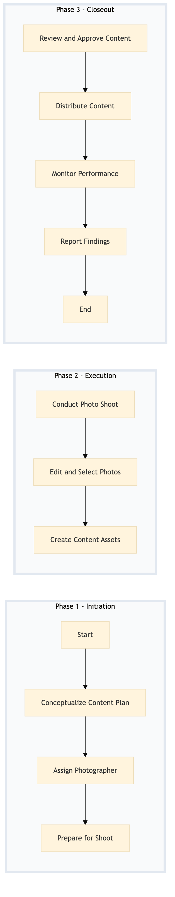

| Role | Steps |
|---|---|
| Marketing Manager | 1.1 1.2 3.1 3.4 |
| Photographer | 2.1 |
| Executive Housekeeper | 1.3 |
| Front Desk Agent | 1.3 |
| Digital Content Specialist | 2.2 2.3 |
| Brand Director | 3.1 |
| Social Media Manager | 3.2 |
| Analytics Manager | 3.3 |
| Step | Name | Role | System | Input | Output | KPI | Dec? | Exc? | Pain Point / Risk |
|---|---|---|---|---|---|---|---|---|---|
| 1.1 | Conceptualize Content Plan | Marketing Manager | Oracle OPERA Cloud, Salesforce | Campaign brief and objectives | Content plan document | Less than 2 hours | N | Y | Aligning content with campaign goals while ensuring brand consistency |
| 1.2 | Assign Photographer | Marketing Manager | Oracle OPERA Cloud, Book4Time | Content plan document | Photographer assignment and schedule | Less than 30 minutes | N | Y | Coordinating with photographers' availability |
| 1.3 | Prepare for Shoot | Executive Housekeeper, Front Desk Agent | Oracle OPERA Cloud, IDeaS G3 RMS | Photographer assignment and schedule | Prepared hotel rooms and areas | Less than 1 hour per room | N | Y | Ensuring the hotel is presentable for photography |
| 2.1 | Conduct Photo Shoot | Photographer | None | Prepared hotel rooms and areas | Raw photo files | Less than 4 hours per shoot | N | Y | Capturing high-quality images under time constraints |
| 2.2 | Edit and Select Photos | Marketing Manager, Digital Content Specialist | Adobe Creative Suite | Raw photo files | Edited and selected photos | Less than 8 hours | N | Y | Maintaining brand standards while editing |
| 2.3 | Create Content Assets | Digital Content Specialist | Adobe Creative Suite, Microsoft Power BI | Edited and selected photos | Content assets (e.g., social media posts, email campaigns) | Less than 10 hours | N | Y | Creating engaging content that resonates with the target audience |
| 3.1 | Review and Approve Content | Marketing Manager, Brand Director | Microsoft Power BI, Salesforce | Content assets | Approved content for distribution | Less than 2 hours | Y | N | Ensuring brand consistency and quality |
| 3.2 | Distribute Content | Digital Marketing Specialist, Social Media Manager | Social Media Management Tools (e.g., Hootsuite, Buffer) | Approved content for distribution | Content published on digital platforms | Less than 1 hour | N | Y | Timing and scheduling posts to maximize engagement |
| 3.3 | Monitor Performance | Digital Marketing Specialist, Analytics Manager | Google Analytics, Microsoft Power BI | Published content | Performance report | Less than 2 hours daily | N | Y | Analyzing and interpreting data to optimize future campaigns |
| 3.4 | Report Findings | Marketing Manager, Digital Marketing Specialist | Microsoft Power BI, Salesforce | Performance report | Final report and recommendations | Less than 1 hour | N | Y | Summarizing insights for stakeholders |
A structured process document for photography and content production at a Marriott full-service hotel, focusing on capturing high-quality images to support marketing campaigns and digital initiatives.